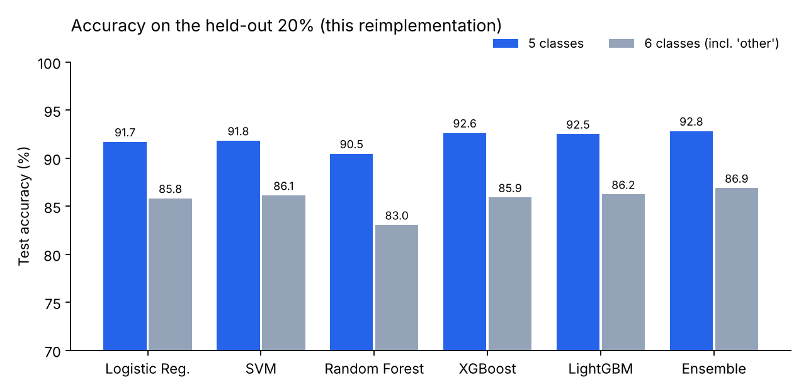
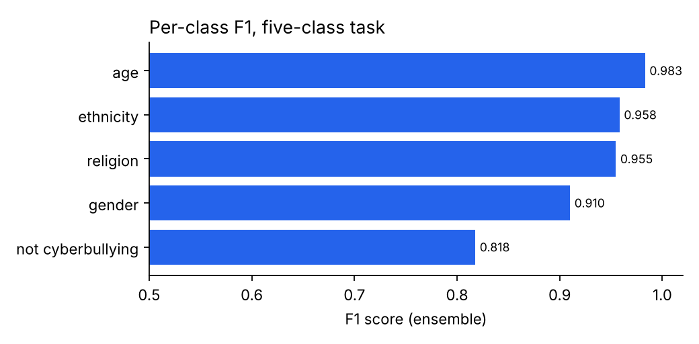
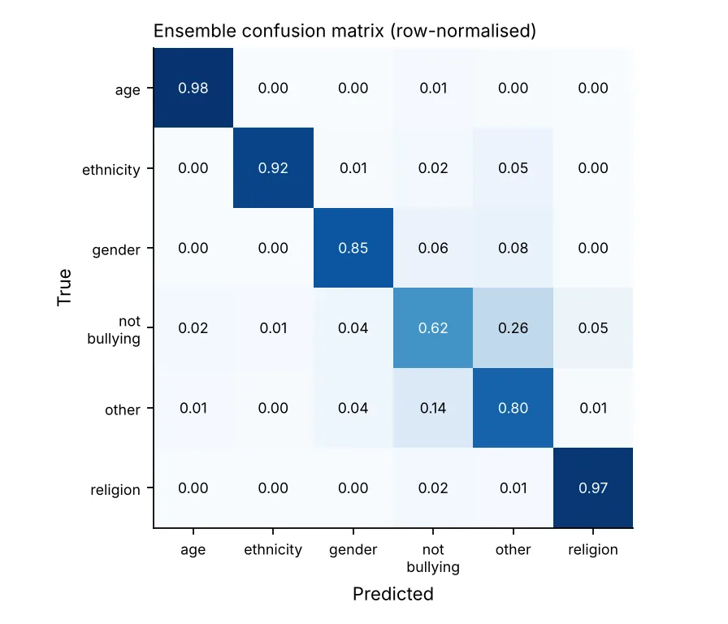

Cyberbullying Detection
Telling bullying apart from banter, and naming who it targets
Five classic models vote on every tweet using TF-IDF and Word2Vec features. The ensemble sorts tweets into age, ethnicity, gender and religion bullying, or not bullying, and beats every single model it is built from.
From tweet to label
pipeline + test results- 01Tweettext, emoji, links
- 02Clean + tokeniselinks, @, emoji out · negations kept
- 03FeaturesTF-IDF 1–2 grams + Word2Vec
- 04BalanceSMOTE on training data only
- 05Five modelsLR · SVM · RF · XGBoost · LightGBM
- 06Soft votelabel + confidence + each model's vote
Accuracy, 5 classes (my run)
Accuracy with the vague 'other' class (6 classes)
~/screens
See it working



[01] ~/the-problem
Why it matters
Cyberbullying is linked to anxiety, depression and self-harm in young people, and platforms carry far more posts than moderators can read. Many filters only say 'toxic' or 'not toxic', which doesn't tell a moderator who is being targeted or why.
Earlier work often relies on one model or one kind of feature. This paper combines word counts (TF-IDF) with word meaning (Word2Vec), balances the classes with SMOTE, and lets five different models vote, so one model's blind spots are covered by the others.
The ensemble is a screening aid, not a verdict: sarcasm, quotes and reclaimed words can fool it, so a person reviews anything that leads to action.
[02] ~/how-it-works
How it works
Clean text, two kinds of features, balanced training data, and five models that vote.
- 01
Remove duplicates first
1,675 repeated tweets, some with conflicting labels, are removed before the 80/20 split, so no tweet is tested on after being trained on.
- 02
Clean the text
Lower-case; strip links, @mentions, emoji and digits; keep hashtag words; turn "n't" into "not" so negations survive; Porter stemming.
- 03
Two kinds of features
TF-IDF on 1–2 word phrases (20,000 features) plus each tweet's average Word2Vec vector, trained on the training tweets only.
- 04
Balance with SMOTE
SMOTE adds synthetic examples of the smaller classes in the training features only; the test set is never resampled.
- 05
Train five models
Logistic Regression, a calibrated linear SVM, Random Forest, XGBoost and LightGBM all learn from the same features, so the comparison is fair.
- 06
Soft vote
The ensemble averages the five models' probabilities and returns the label, a confidence and each model's vote, shown in the Streamlit app.
[03] ~/results
Results
Held-out 20% of the deduplicated data (7,627 tweets for 5 classes, 8,876 for 6). The paper column is quoted from the publication.
| MODEL | ACC (5 CLASSES) | MACRO F1 (5) | ACC (6 CLASSES) | MACRO F1 (6) | PAPER |
|---|---|---|---|---|---|
| Ensemble | 0.928 | 0.925 | 0.869 | 0.858 | ≈0.94 |
| XGBoost | 0.926 | 0.923 | 0.859 | 0.848 | 0.92–0.93 |
| LightGBM | 0.925 | 0.922 | 0.862 | 0.852 | 0.92–0.93 |
| SVM | 0.918 | 0.913 | 0.861 | 0.847 | 0.92–0.93 |
Why my numbers sit below the paper's: I remove duplicate and conflicting tweets before splitting, which makes the test stricter. Adding the vague 'other' class costs about 6 points, mostly from mix-ups with not-bullying.
HONEST LIMITS
— English tweets from 2020: slang, other platforms and other languages will score lower, and keyword-heavy classes (age, religion) look easier here than they are in the wild.
— The public repo is a clean reimplementation of the paper's method. The paper's figure (≈94%) and my reproduced figure (92.8%) are reported separately.
WHAT I’D DO NEXT
→ A transformer (e.g. DistilBERT) as a sixth voter
→ Score whole threads, not single posts, to catch sarcasm and context
→ Hindi, Marathi and Hinglish data
→ A moderator browser extension, like PhishGuard's